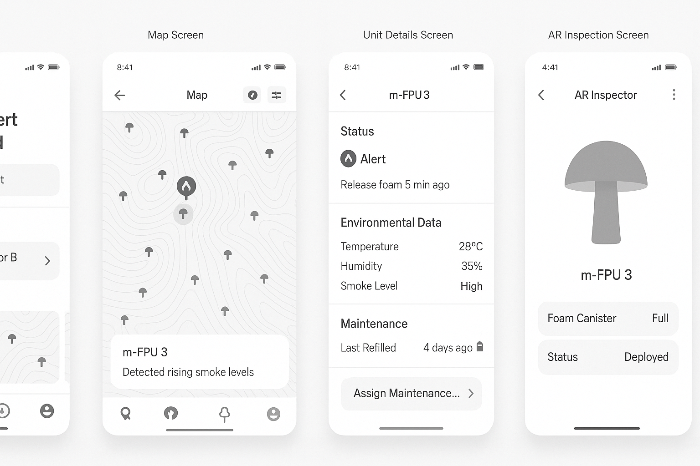

This is a ready-to-print page
Forest Guard: nature-inspired mushroom fire defense
Forest Guard is a concept project inspired by nature and designed to respond to one of the most urgent environmental threats of our time: wildfire. The idea explores how eco-technology, product thinking, and user experience design could come together to protect vulnerable forest ecosystems through early detection and fast, localised response.
At the centre of the concept is the Mushroom Guard, a mushroom-shaped autonomous unit embedded into forest environments. Designed to blend into the woodland while quietly standing watch, it combines natural inspiration with smart monitoring and suppression capabilities. This project reflects my interest in imagining bold solutions to real-world problems and developing them as if they were real products.
The challenge
Forest fires spread quickly and often begin before human responders can react. The challenge was to imagine a system that could detect early signs of fire, respond immediately in remote environments, and support emergency services before a situation escalates.
The idea needed to go beyond a technical object. It had to work as a believable ecosystem: something that could exist physically in nature, communicate with other units, support forest rangers and firefighters, and remain sustainable in both form and function. It also needed to feel calm, clear, and usable for the people responsible for monitoring and maintaining it.

My role
My role in this concept project was to originate the idea, shape the product vision, and begin defining the user experience around it. This included thinking through the system not only as a speculative device, but as a usable service with clear interactions, practical maintenance, and meaningful value for the people involved.
I framed the concept as the Mushroom-Shaped Fire Prevention Unit (M-FPU), a passive and autonomous fire suppression device designed for early-stage wildfire mitigation in forest environments. Its form was intentionally inspired by a mushroom so that it could blend into its natural surroundings while also creating enough surface area for sensors and foam dispersion.
Process and approach
The process began with the core concept itself: a bio-inspired sentinel quietly positioned in vulnerable forests, equipped with heat sensors and air-quality monitors capable of identifying early warning signs such as elevated temperature and smoke within a five-metre radius. Once triggered, the unit would release a biodegradable, non-toxic fire-retardant foam to suppress flames, protect nearby vegetation, and buy time for emergency response teams.
From there, I started shaping the project through a UX lens by defining users, goals, features, and possible journeys.
Key features
- Thermal and gas sensors: monitors temperature and smoke, triggering action when fire signs are detected nearby.
- Suppression system: releases biodegradable, non-toxic foam to coat vegetation and slow the spread of fire.
- Power source: self-powered through hybrid solar and kinetic energy systems.
- Communication: mesh networking allows unit-to-unit and central alert transmission.
- Maintenance and refilling: modular foam canisters designed to be refilled by rangers or drones.
Defined users
- Primary users: forest rangers, environmental scientists, firefighters, and forestry maintenance workers.
- Secondary users: conservation organisations, government fire control agencies, and drone operators.
User goals
- Monitor M-FPU unit status.
- Receive real-time alerts.
- View unit location and environmental data.
- Coordinate fire-risk responses.
- Manage maintenance and refills.
Key UX components
The concept includes a set of digital tools that I plan to continue designing and refining:
- Dashboard (web and mobile): map view, environmental data, alerts, maintenance logs, and network status.
- AR maintenance interface: field-based overlays with instructions and diagnostics for inspection and repairs.
- Drone integration console: supports refill planning, inspections, and video or diagnostics from drones.
UX principles
- Clarity and calm design for emergency situations.
- Offline mode support for remote fieldwork.
- Accessible UI with language and contrast options.
- Design that reflects sustainability and harmony with nature.
Journey example scenario 1
Scenario: a forest ranger receives an alert that three M-FPU units have detected smoke near Ridge Sector B.
- Opens the app and views a heatmap overlay.
- Taps the relevant unit ID to check data and history.
- Assigns a drone or plans an on-site visit.
- Uses AR in the field to assess and refill canisters.
Journey example scenario 2
Scenario: a family enjoying a picnic begins to smell smoke and soon spots a growing fire spreading through nearby trees.
- Sends an alert to nearby fire authorities and ranger networks.
- Updates the live dashboard with location, intensity, and deployment status.
- Triggers nearby Mushroom Guards through the mesh network if the fire continues to spread.
My contribution
My contribution was to create and articulate a product concept that connects environmental resilience with UX thinking. Rather than imagining only the physical object, I considered how the surrounding service experience could work for the humans interacting with it, including monitoring, maintenance, emergency coordination, and field usability.
This project also reflects the way I like to work creatively: starting with a strong idea grounded in nature, then expanding it into a wider system of interactions, users, and possibilities. In the coming months, I plan to continue developing the concept as though it were a real product by exploring its interface design, user journeys, and broader impact.
If this idea sparks something in others, I would genuinely love to see it grow through collaboration. Innovation is always better shared.